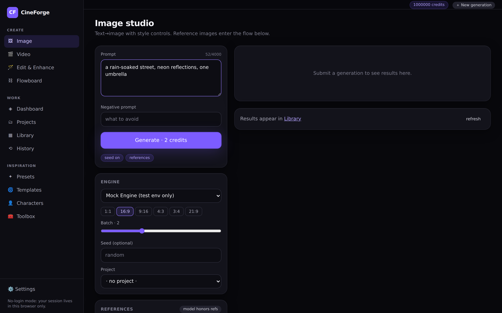
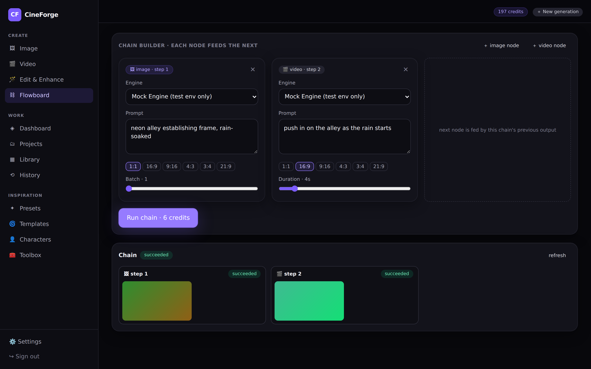
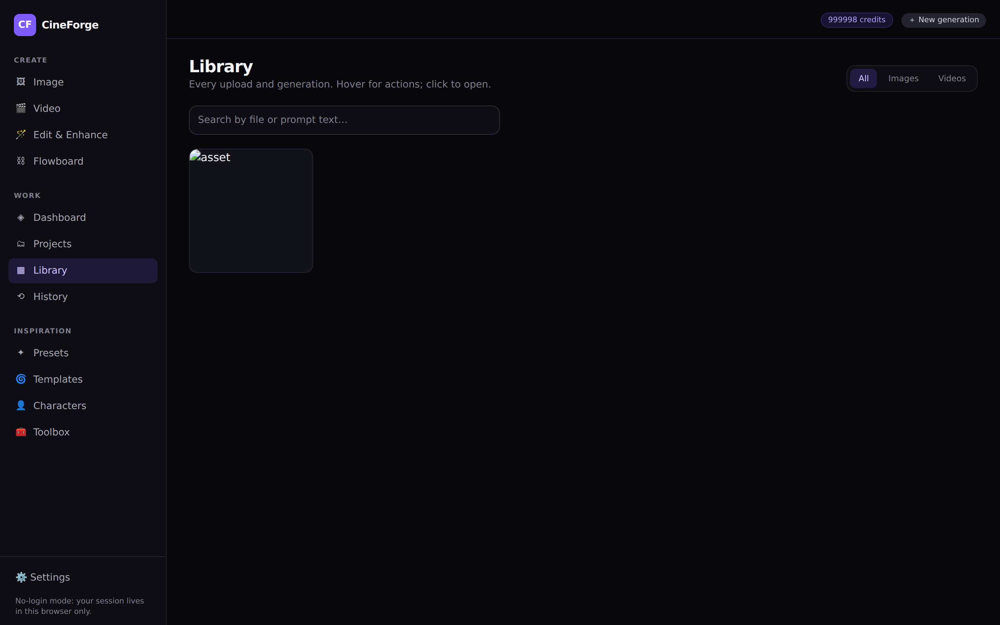

Il tuo studio di cinema AI.
Gratis, per davvero.
CineForge AI genera immagini con un motore community incluso (zero euro, zero chiavi), organizza progetti con preset da regista e collega i passi in sequenze automatiche. Sul tuo Mac, in un clic.
macOS 13+ · richiede Docker Desktop (gratuito) per girare in locale · Windows/Linux: 4 comandi
Dal download alla prima immagine
Niente configurazioni, niente chiavi API da cercare. L'installer fa tutto: scarica il codice, avvia i servizi e apre il browser quando è pronto.
Scarica il .dmg →
Dalla pagina delle release di GitHub. Un file, ~2 MB.
Trascina in Applicazioni →
L'installer è un'app normale: si apre, controlla Docker e ti guida se manca qualcosa.
Clicca «Prepara e avvia» →
Il primo avvio costruisce tutto (5–15 min, una volta sola). Poi si apre localhost:3000 e si parte subito: niente registrazione, crediti illimitati.
Cosa trovi dentro
Screenshot veri, presi dalla suite di test del progetto (dati di prova, motore di test che disegna riquadri colorati al posto delle immagini). Quello che vedi è esattamente ciò che si apre sul tuo Mac.



Immagini a 0 €, senza carta, senza registrazione
Il motore «AI Horde · community» è preinstallato e preattivato: usa le GPU condivise dai volontari di un progetto open source (Haidra-org/AI-Horde). Non serve nemmeno una chiave API.
- Costo: zero euro, davvero — paghi solo in pazienza
- Nessuna chiave, nessun account esterno, nessuna carta
- Già attivo di default nell'installer
- Onesto: a volte aspetti 30–120 s in coda, immagini ~512 px — perfette per bozze e storyboard
- I video servono motori «pro» opzionali: restano disattivati e dichiarati finché non metti una chiave tua
Immagine reale generata a costo zero dal motore gratuito, nello smoke test live del progetto (su GitHub Actions, senza alcuna credenziale) — prompt: «via bagnata dalla pioggia, riflessi al neon».
Fatto come un prodotto vero
Studi dedicati
Immagine e video con prompt, proporzioni, seed, passi e negativi — come nelle piattaforme professionali.
Flowboard
Catene di passi: l'output di un nodo alimenta il successivo. Il worker avanza la catena da solo.
Preset da regista
Setup di ripresa, movimenti di camera, intensità emotiva: il prompt engine li compone per te.
Crediti trasparenti
Registro completo, rimborsi automatici sulle stampelle, prezzi dichiarati prima di generare.
Onestà di sistema
Mai successi finti: se un motore non è configurato lo vedi chiaro (provider_not_configured), con i crediti restituiti.
Tuo, davvero
Open source, i tuoi asset restano nel tuo storage, tutto gira sul tuo Mac. Nessun vendor lock-in.
⬇️ Scarica CineForge AI per Mac
Installer con interfaccia grafica: scarica, trascina, avvia. Tutto il resto lo fa lui.
macOS 13+ · ~2 MB · universale (Apple Silicon + Intel) · richiede Docker Desktop (gratuito)
Windows o Linux? → 4 comandi con Docker
Le cose che tutti chiedono
Devo pagare qualcosa?
No. L'app, il motore gratuito e i crediti (1.000.000 di benvenuto, senza scadenza) costano zero — e non serve nemmeno registrarsi: apri e generi. I motori «pro» (video, 4K) sono opzionali: se un domani vuoi usarli, metti tu una tua chiave API — il progetto non vende nulla e non chiede carte.
Come può essere gratis generare immagini?
Il motore community (AI Horde) usa le GPU messe a disposizione da volontari in tutto il mondo: in cambio, quando non generi, il tuo Mac può contribuire (opzionale). Il «prezzo» è un po' di attesa in coda.
E i video?
Il motore gratuito genera solo immagini. I video richiedono un motore a pagamento (es. con chiave API tua). CineForge te lo dice chiaramente invece di fingere: onestà prima di tutto.
Dove girano i miei dati e le immagini?
Sul tuo Mac: database, storage e worker sono container locali. Le immagini gratuite vengono generate sulle GPU dei volontari e poi scaricate nella tua libreria locale.
Cosa c'è sotto il cofano?
Next.js 14 (web) + FastAPI (API) + worker asincrono con coda, Postgres, Docker. Il progetto è documentato per filo e per segno su GitHub: docs/.
Sono affiliato ad altri servizi AI?
No: CineForge AI è un progetto originale e indipendente, ispirato solo a funzionalità osservabili pubblicamente di altri prodotti. Nessun asset, testo o codice di terzi.